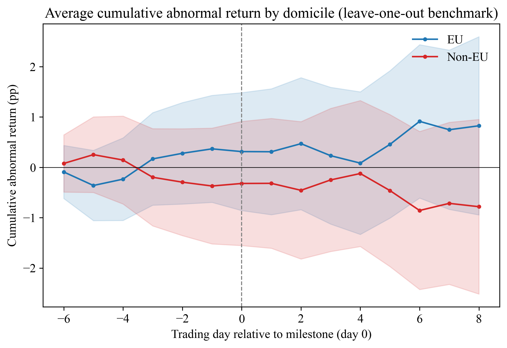
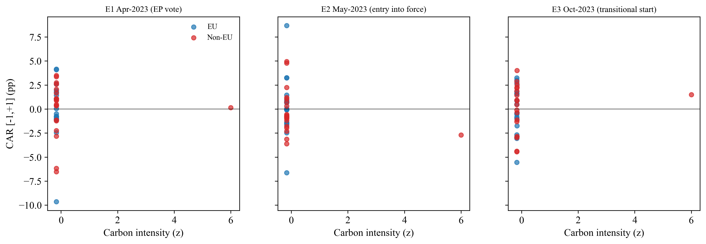

The Question研究问题
The proposed mechanism is straightforward: if a border carbon charge raises expected costs, more carbon-intensive non-EU producers might suffer larger negative abnormal returns around policy news. We test that prediction rather than assuming a carbon premium exists.假设的传导机制很直接：如果碳边境收费提高了预期成本，碳强度更高的非欧盟企业可能在政策消息附近出现更负的异常收益。研究检验的是这个预测，而不是预先假定存在碳溢价。
The focal quantity is the carbon-intensity slope among non-EU firms. A difference between EU and non-EU average returns is a different question, and domicile is only a rough proxy for actual CBAM exposure.核心参数是非欧盟企业内部的碳强度斜率。欧盟与非欧盟企业平均收益的差异是另一个问题，而且注册地只能粗略代理企业的实际 CBAM 暴露。
Sample & Events样本与事件
| Milestone政策节点 | Policy date政策日期 | Trading day 0交易日 0 |
|---|---|---|
| European Parliament adoption欧洲议会通过法规 | 2023-04-18 | 2023-04-18 |
| Regulation enters into force法规生效 | 2023-05-17 | 2023-05-17 |
| Transitional reporting begins过渡期报告义务启动 | 2023-10-01 | 2023-10-02 |
The paper combines daily adjusted share prices with Scope 1 and Scope 2 emissions and revenue. The primary event windows are [0, +1], [-1, +1] and [0, +3] trading days. The wider window is a sensitivity check.论文结合日度复权股价、Scope 1 与 Scope 2 排放以及收入数据。主要事件窗口为 [0, +1]、[-1, +1] 和 [0, +3] 个交易日，较宽窗口仅用于敏感性分析。
From Prices to a Test从价格到检验
1. Remove the firm's own return from its benchmark1. 将企业自身收益移出比较基准
\[ AR_{i,t}=r_{i,t}-\frac{1}{N_t-1}\sum_{j\ne i}r_{j,t},\qquad CAR_{i,e}^{(h)}=\sum_{t\in h}AR_{i,t}. \]
Each firm's return is compared with the equal-weighted return of the other sample firms trading that day, then added over the event window. This avoids direct self-inclusion, but the benchmark still contains firms exposed to the same policy news.先将一家企业的收益与当天其余样本企业的等权收益比较，再在事件窗口内相加。这样避免企业与包含自身的基准比较，但基准中的其他企业仍可能受到同一政策消息影响。
2. Measure carbon intensity2. 衡量碳强度
\[ CI_i=\frac{\mathrm{Scope\ 1}_i+\mathrm{Scope\ 2}_i}{\mathrm{Revenue}_{i,\mathrm{USD}}}. \]
The primary specification standardizes this measure. Revenue units and emissions disclosure dates matter: an incorrectly scaled denominator can dominate the regression, and a later disclosure is not information investors necessarily had at the event date.主要模型对该指标进行标准化。收入单位和排放披露日期都很重要：分母的单位错误可能主导回归，事后披露的数据也不代表投资者在事件当时已经掌握的信息。
3. Separate the two carbon slopes3. 区分两组碳强度斜率
\[ \begin{aligned} CAR_{i,e}^{(h)}={}&\alpha+\beta_1 EU_i+\beta_2 CI_i^{std}\\ &+\beta_3(EU_i\times CI_i^{std})\\ &+\beta_4\log(\mathrm{Revenue}_{i,\mathrm{USD}})+\delta_e+\varepsilon_{i,e}^{(h)}. \end{aligned} \]
Here \(\beta_2\) is the non-EU carbon slope, \(\beta_2+\beta_3\) is the EU slope, and \(\beta_3\) is their difference. The model includes event fixed effects and issuer-clustered inference. It is a cross-sectional interacted event study, not a difference-in-differences design or a clean causal estimate.其中 \(\beta_2\) 为非欧盟企业的碳强度斜率，\(\beta_2+\beta_3\) 为欧盟斜率，\(\beta_3\) 为两者差异。模型包含事件固定效应，并按发行人聚类进行推断。这是带交互项的横截面事件研究，不是双重差分，也不是严格识别的因果估计。
What the Estimates Say估计结果
| Window窗口 | Estimate估计值 | 95% CI | p | N |
|---|---|---|---|---|
| [0, +1] | -0.13 | [-1.10, 0.84] | 0.797 | 109 |
| [-1, +1] | -0.90 | [-2.60, 0.80] | 0.300 | 110 |
| [0, +3] | 0.32 | [-1.52, 2.16] | 0.734 | 110 |
All three intervals include zero. The [-1, +1] estimate is compatible with both a meaningful negative effect and a modest positive effect. It does not tightly establish the absence of repricing.三个区间都包含零。[-1, +1] 窗口的估计既容许有经济意义的负向效应，也容许一定的正向效应，因此不能精确证明不存在重新定价。
For the October event alone, the paper reports -1.30 percentage points with p = 0.046 under conventional clustered inference. Multiple event-specific tests and the absence of an event-specific small-sample adjustment make this an isolated finding, not a robust headline.单独看十月事件，论文在常规聚类推断下报告 -1.30 个百分点、p = 0.046。但存在多次事件检验，而且未报告针对该单个事件的小样本校正，因此它只能被视为孤立发现，不能作为稳健的主结论。

Challenge the Result结果经得住哪些检验
One denominator changes the story一个分母就可能改变结论
An audit identifies a mis-scaled revenue denominator for JSW Steel. Once that observation is down-weighted through ranks or removed, the slope turns positive. The significant estimates therefore point in the opposite direction to the proposed negative penalty.数据审计识别出 JSW Steel 收入分母的单位错误。使用秩变换降低它的影响，或删除该观测后，斜率转为正值。因此，达到显著性的估计反而与假设的负向碳惩罚方向相反。
| Intensity treatment碳强度处理方式 | Coefficient系数 | 95% CI | p |
|---|---|---|---|
| Raw, standardized原始值标准化 | -0.90 | [-2.60, 0.80] | 0.300 |
| Log intensity对数变换 | 0.41 | [-1.15, 1.97] | 0.606 |
| Rank秩变换 | 0.99 | [0.15, 1.84] | 0.022 |
| Drop invalid denominator删除错误分母观测 | 0.91 | [0.22, 1.61] | 0.010 |

Uncertainty beyond one p-value不只看一个 p 值
For the pooled [-1, +1] non-EU slope, p-values are 0.300 with CR1, 0.407 with CR2, 0.413 with a 9,999-draw wild cluster bootstrap, and 0.113 with 10,000 randomizations. These issuer-level procedures do not create additional independent policy shocks.对合并样本 [-1, +1] 的非欧盟斜率，CR1、CR2、9,999 次 wild cluster bootstrap 和 10,000 次随机化推断的 p 值分别为 0.300、0.407、0.413、0.113。这些发行人层面的程序并不会增加独立政策冲击的数量。
At 80% power and 5% size, the minimum detectable effect is 1.38, 2.43 and 2.63 percentage points across the three narrow windows. None of the 95% intervals fits entirely within ±1 percentage point. This conservative interval-containment check is not a conventional two one-sided equivalence test.在 80% 检验功效和 5% 显著性水平下，三个窄窗口的最小可检出效应分别为 1.38、2.43 和 2.63 个百分点。没有一个 95% 区间完全落在正负 1 个百分点内。这是保守的区间包含检验，不是常规的双单侧等效性检验。
Where Interpretation Stops结论的边界
- Exposure is approximate. EU domicile is not EU-export share, covered-product share or embedded emissions.暴露只是代理。欧盟注册地不等于对欧出口占比、覆盖产品占比或隐含排放。
- Emissions are not point-in-time. 32 firms use FY2023 vintages, four use FY2024 and only one FY2022. Restricting to clearly pre-event vintages leaves no estimable cross-section.排放数据不是严格的时点数据。32 家使用 FY2023、4 家使用 FY2024，只有 1 家使用 FY2022；只保留明确早于事件的版本后，无法估计横截面模型。
- The raw EU slope is not separately identified. Near-zero within-EU intensity variation produces extreme estimates and wide intervals, not meaningful economic magnitudes.原始模型中的欧盟斜率无法单独识别。组内碳强度变化接近零，产生的极大系数与宽区间不应被解释为真实的经济量级。
- The benchmark is internal. It retains common policy exposure and induces cross-firm dependence; issuer clustering alone does not fully resolve that dependence.基准来自样本内部。它保留了共同政策暴露并引入跨企业相关性，仅按发行人聚类不能完全解决。
- No broad claim about unpriced carbon risk. This is a limited event-study result, not evidence that carbon risk never matters or a backtested investment strategy.不能推导出碳风险普遍未被定价。这是一项有限事件研究的结果，不代表碳风险从不重要，也不是经过回测的投资策略。
For model validation and investment risk, the practical lesson is to inspect measurement, identification and statistical power before turning a coefficient into a decision. A credible research result includes what the data cannot establish.对模型验证与投资风险研究而言，实际启示是在把系数转化为决策之前，先审查测量、识别和统计功效。可信的研究结果，也包括明确说明数据无法证明什么。
Manuscript & Materials论文与研究资料
Chen, Pengbiao; Seco, Luis; Sharifi, Azin. Anticipatory Equity Repricing and the EU Carbon Border Adjustment Mechanism. Manuscript under review.审稿中论文。
The PDF is the author-supplied version, preserved unchanged. The GitHub companion contains the paper, a structured summary and explicitly transcribed reported results. It does not include the original issuer-level data or full estimation code. Those research materials are available from the author on request, subject to the original data-source licenses.PDF 为作者提供的版本，未经修改。GitHub 配套仓库包含论文、结构化解读和明确标注为转录的报告结果，不包含原始发行人数据或完整估计代码。按论文说明，这些研究资料可向作者申请，并受原始数据许可约束。
This manuscript supersedes the conclusions of the earlier exploratory CBAM note; the two versions should not be combined as independent evidence.本论文更新了早期 CBAM 探索笔记的结论；两版内容不应被合并视为独立证据。